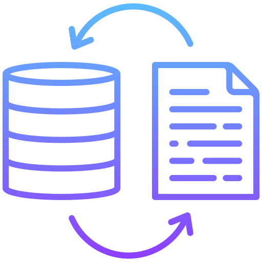
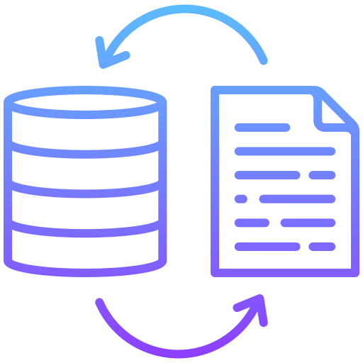

Featured Work
Projects Dashboards


Automation Solutions


I am passionate about transforming raw data into actionable insights. My journey began in data entry at a manufacturing firm, evolving into expertise in Microsoft Office (Advanced Excel with VBA, Word, PowerPoint), Structured Query Language (SQL), Microsoft Power BI, Tableau, Microsoft Fabric, Microsoft Project, and Data Storytelling. Through my portfolio, I showcase projects that demonstrate my ability to extract, clean, analyse and visualise data to drive business decisions. I am eager to learn, tackle complex challenges, and empower organisations with data-driven solutions.
The Café Harmony Sales Analysis Dashboard provides a comprehensive overview of sales performance, inventory, customer insights, and employee contributions, enabling data-driven decisions to enhance efficiency and profitability.

I leveraged Power BI to transform Shopify sales data through meticulous cleaning and modelling in Power Query, crafting a robust relational data model. This analysis reveals customer behaviour, retention trends, and regional sales insights, providing actionable recommendations to drive strategic growth.
This analysis delivers deep insights into medical metrics, revealing billing trends, provider performance, and regional variations across UK departments, procedures, and cities. Powered by advanced data exploration and visualisation, it drives informed healthcare decisions.
I developed an interactive Power BI dashboard for NovaMed Solutions to track pharmaceutical sales and customer performance, delivering real-time insights into revenue trends, product performance, and regional metrics to support data-driven decisions.
View ProjectI performed this analysis using Python to evaluate a 550-row dataset, forecasting loan approval probabilities with tools such as pandas and scikit-learn.


WorkforceAI revolutionises staffing with AI-powered simulations and real-time data, optimising workforce allocation, forecasting demand, and elevating customer service performance across diverse communication channels.
 


.png "OpenAI")

This Excel-based NYC Collision Dashboard reveals 238,421 total collisions, with driver inattention, failure to yield, and unsafe speed as significant factors.
JobTracker AI is a dynamic, centralised dashboard that streamlines job application management, enabling users to effortlessly log, track, and analyse their job search progress, from submission to interviews and hiring, with clear, actionable insights.
The Sales & Marketing Call Centre Dashboard provides a clear view of agent performance, call outcomes, and customer trends, enabling quick identification of gaps and smarter, data-driven decisions.
Talkument AI harnesses AI agents and n8n automation to seamlessly extract, embed, and analyze insights from uploaded documents and YouTube transcripts, supercharging data-driven decision-making with unparalleled efficiency.

With six years of experience in various data-related roles, including data entry, data management, data administration, and data analysis, I bring a well-rounded and practical approach to data work. I have a strong track record in data analysis, data visualization, and storytelling, having led end-to-end analytics projects that span data wrangling, data modelling, ETL procedures and dashboard creation. My work has directly supported strategic decision-making in industries such as engineering, automotive, and retail. I am passionate about continuous learning and thrive in environments where data is used to solve real-world problems.
My technical skill set includes advanced proficiency in Excel (PivotTables, Power Query), Power BI (DAX, custom visuals), SQL (joins, CTEs, views), AI, Robotics, and Automation. In addition to my technical capabilities, I bring strong soft skills to the table, including excellent verbal and written communication, strong interpersonal relationships, effective teamwork and collaboration, critical thinking, and sharp attention to detail.
Projects Completed
Years Experience
Efficiency Improvement
My professional journey in transforming data into strategic business insights
Conducted comprehensive SKU-level performance analysis using Excel, SQL, and Power BI to define key metrics that boosted forecasting accuracy by 25% and delivered actionable insights for data-driven decisions.
Developed and automated interactive dashboards, leveraging Power BI and SQL queries to empower operational work and enhance decision-making efficiency by 30%.
Created visualizations that communicated complex analytical findings to non-technical stakeholders, resulting in a 40% increase in data-driven decision-making and self-service analytics adoption.
Supported ad hoc data requests, automating reporting workflows with RPA tools (n8n), streamlining processes by 25% and contributing to continuous improvement.
Maintained and optimized product configuration (CPQ – Configure, Price, Quote) systems, ensuring a 30% reduction in CPQ errors across departments.
Collaborated with engineering and procurement teams to gather requirements, delivering clear reports that reduced configuration errors by 30% and aligned with KPIs.
Ensured data quality through validation processes, increasing report accuracy by 35% and supporting strategic planning.
Built Excel-based dashboards to track engineering change metrics, supporting strategic resource allocation decisions with 25% improved accuracy.
Developed SQL-based reports for e-commerce performance, transforming raw data into insights that improved order accuracy by 20% and supported business strategy.
Collaborated with business teams to identify reporting needs, producing clear, accurate reports for senior management that enhanced decision-making speed.
Implemented RPA solutions to automate data validation, improving data quality and report reliability by 35%.
Conducted complex analysis to identify trends and gaps in customer data, reducing error rates by 40% through rigorous data audits.
Disclaimer: The data used in these projects is entirely fictional or simulated. It has been created solely for learning and demonstration purposes and does not reflect real-world information.